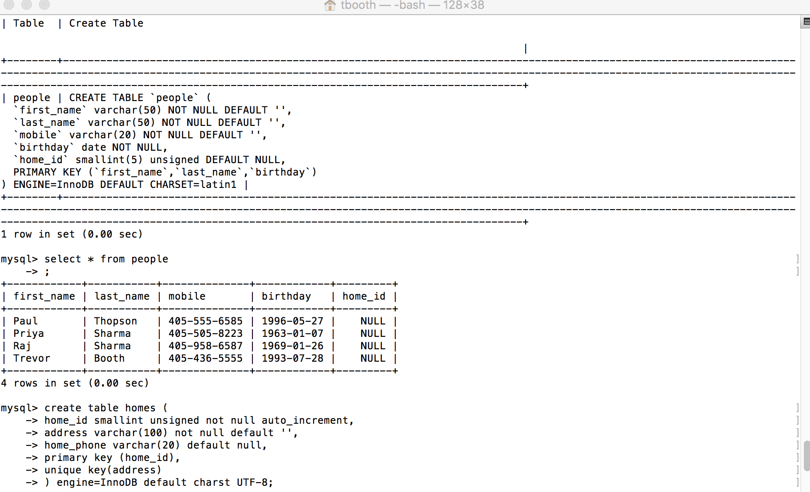
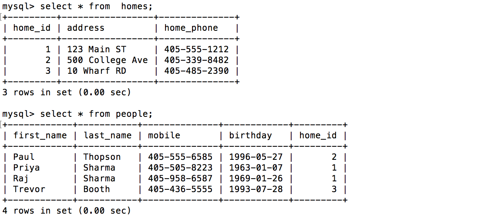
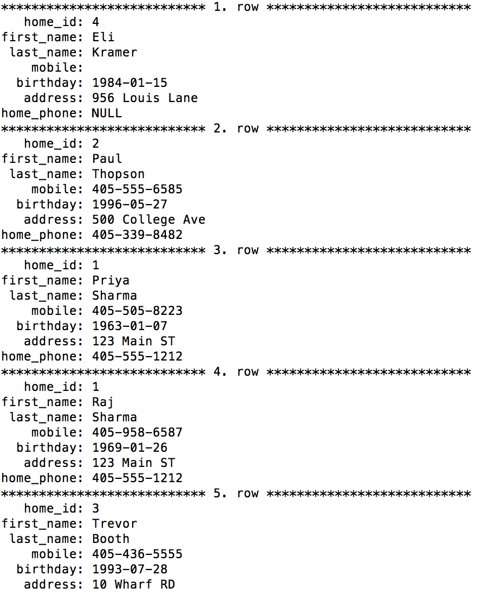

Up & Running with MySQL
- Chapter 1:
The first chapter is all about touching up on the previous videos. Showing some jargon, basic database acronyms, and going over things you should know before starting databases.
- Chapter 2:
My challenge for this chapter was to navigate throught a few daabases. Exploring through was fairly easy but still basic but the language seem pretty straight forward.
- Chapter 3:

- Chapter 4:
Chapter 4 was taking a look at variety of different function. We looked at how to find a specific rows in a table or getting counts on certain items. Challenge was to write a query to "Determine how much older someone is?". This was the Query 'SELECT FROM_DAYS(DATEDIFF('XXXX-XX-XX','XXXX-XX-XX'))'.
- Chapter 5:

- Chapter 6:
